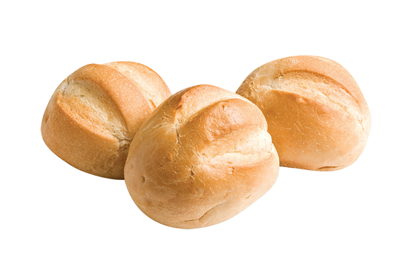

HOMEMADE BREAD
There are so many things to love about this bread recipe, but if I
had to highlight the best parts, it's that it only requires shelf stable ingredients (no milk, eggs or butter needed!) and
it's EASY and fool-proof to make! Whether you're a newbie or experienced bread maker, you can't mess this up, and I know you're
going to love it (~3h45 to get ready!)
Ingredients
Warm water: (105-115 degrees)- to activate the yeast
Active Dry yeast
Granulated sugar or honey
Salt: to enhance flavor
Oil
Flour
Steps
In a large bowl or stand mixer add the yeast, water and a pinch of the sugar or honey.
Allow to rest for 5-10 minutes until foaming and bubbly
Add remaining sugar or honey, salt, oil, and 3 cups of flour. Mix to combine. Add another cup of flour and mix to combine.
With the mixer running add more flour, ½ cup at a time, until the dough begins to pull away from the sides of the bowl
Mix the dough for 5 minutes on medium speed (or knead with your hands on a lightly floured surface, for 5-8 minutes)
Grease a large bowl with oil or cooking spray and place the dough inside. Cover with a dish towel or plastic wrap and allow to
rise in a warm place* until doubled in size (about 1 ½ hours)
Punch the dough down really well to remove air bubbles and divide into two equal portions
Spray two pieces of plastic wrap with cooking spray and lay them gently over the pans. Allow dough to rise again for about
45 minutes to one hour, or until risen 1 inch above the loaf pans
Adjust oven racks to lower/middle position. Preheat the oven to 350 F. Bake bread for about 30-33 minutes, or until golden
brown on top. Give the top of a loaf a gentle tap; it should sound hollow.
Invert the baked loaves onto a wire cooling rack. Brush the tops with butter and allow to cool for at least 15
minutes before slicing.